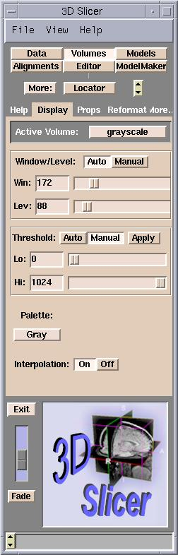

Now that you've loaded in volumes and models you may want to optimize how they are viewed.
To adjust the Window/Level and Threshold of a volume, click Volumes on the Main menu. Then go to the Volumes panel and then select the Display tab. Choose a volume from the Active Volume pulldown menu at the top of the tab and move the sliders or hit the Auto button to adjust the display properties of the volume.
|  | By adjusting the Window/Level of the volume you may optimize displaying the region of interest of the gray scale images. Adjust the Level value until the dark areas become barely visible. Then adjust the Window value that the bright areas are not saturated into white. You may need to go back and forth to readjust until you have optimally displayed your data. |